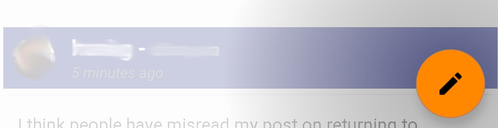

Welcome to DiCa
DiCa is a client for the Friendica Social Media Network.
Navigation
The main view contains each of the Friendica Timelines, and can be viewed by swiping left or right.
Your current timeline is display in the top banner. On opening DiCa, the timeline defaults to ‘Friends’ (known as Network on other Friendica interfaces)
The Search, Help, Notification and Logout options can be reached by clicking on your profile icon in the top right corner of the main screen.
Creating a new post
Posts are created by clicking on the button in the bottom write corner. This button will generally be visible on all timeline screens.

For further help, please visit:
Issues or Feature Requests
https://github.com/jasoncheng/dica
Support Forum